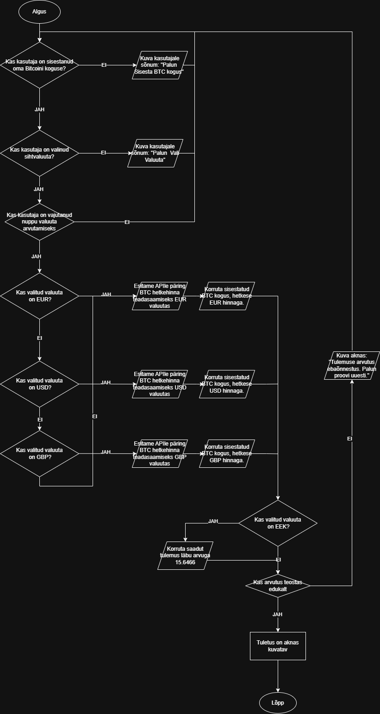

Bitcoin kalkulaator võtab kasutaja sisestatud bitcoini kogus ja korrutab selle valitud valuutaga. Seejärel
kontrollib kas valitud valuuta on EEK, kui on siis korrutab saadud tulemus läbi arvuga 15.6466 ja kui ei ole
EEK liigub kohe edasi järgmisele etappile. Järgmisena programm kontrollib kas arvutus on teostatud edukalt ja kui
on siis kuvad tulemuse ekraanile. Kui arvutus ei ole edukalt teostatud siis kuvab ekraanile "Tulemuse arvutus
ebaõnnestus. Palun proovi uuesti" ja programm liigub tagasi algusesse.
